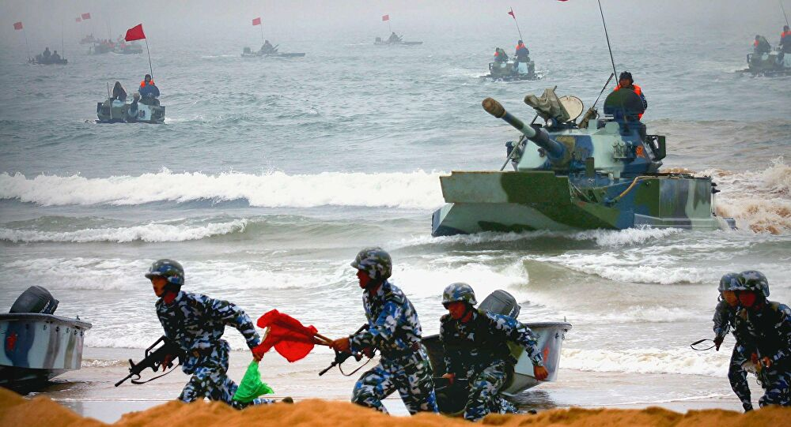

Como está a tensão entre a disputa de China e Taiwan?

China faz manobras militares ao redor de Taiwan em meio a tensões com EUA e Japão
Exercícios ocorreram após Pequim manifestar indignação com vendas de armas dos
EUA a Taiwan e com declaração da primeira-ministra do Japão de apoio ao território, reivindicado pelo governo chinês.